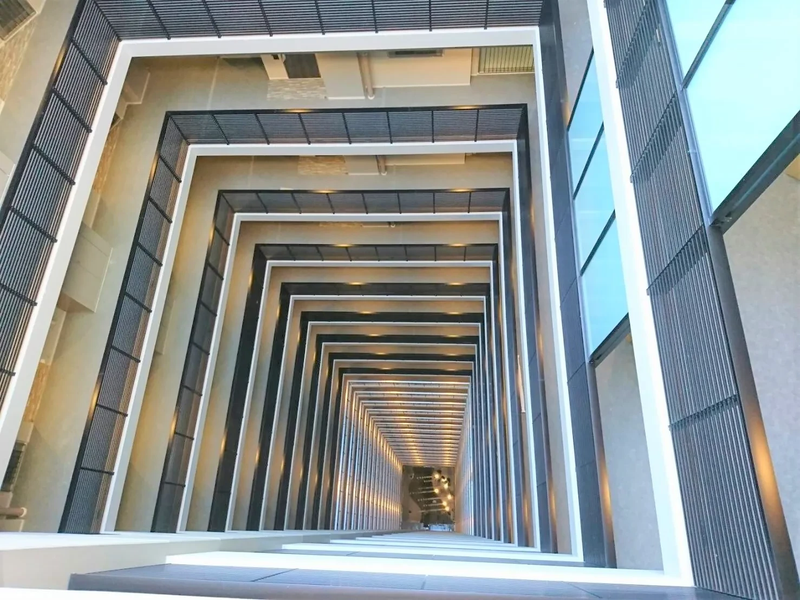

FAQ
よくある質問
元請様・建設会社様からよくいただくご質問をまとめました。ここにない内容は、お気軽にお問い合わせください。
対応範囲
- どのような建物の電気工事に対応していますか?
- 病院・医療施設、工場、倉庫・物流施設、学校や庁舎などの公共施設といった、鉄骨造・RC造の非住宅建物(いわゆる箱物)の新築・改修工事に対応しています。
- どのような工事を依頼できますか?
- 幹線・動力工事、配線・配管工事、分電盤・制御盤まわりの工事、仮設電気工事、計装工事、高圧ケーブルの端末処理です。電気工事一式でも、部分的な範囲でもお受けします。
- 一般住宅の電気工事はお願いできますか?
- 木造戸建住宅の電気工事、住宅のリフォーム・リノベーション、テナントの原状回復工事はお受けしていません。箱物の工事に集中することで、現場の品質と段取りを守っています。なお、近隣の一般のお客様の家電取付はコーポレートサイトで承っています。
- EV充電設備の設置はできますか?
- 個人宅や店舗単独でのEV充電設備の設置はお受けしていません。建物の新築・改修工事の一部として含まれる場合はご相談ください。
高圧工事
- 高圧の工事も依頼できますか?
- はい。高圧ケーブルの端末処理を含め、第一種電気工事士の代表が施工します。幹線や受変電設備まわりの工事とまとめてお任せいただけます。
- 高圧ケーブルの端末処理だけでも頼めますか?
- はい、端末処理のみのご依頼もお受けします。対応できるケーブル・電圧は○○です。
対応エリア
- 対応エリアはどこまでですか?
- 東京23区を中心に対応しています。拠点が埼玉県志木市のため、埼玉県南部の東京寄りのエリアも対応可能です。その他の地域は、工事の規模・内容・工期によってご相談ください。
ご依頼の形
- 常用(応援)だけでも依頼できますか?
- はい。1日からお受けしています。初めてのお取引では、まず常用で現場に入らせていただき、仕事ぶりを見ていただいてから請負をご検討いただく形も歓迎です。
- 何人で対応していますか?人数が必要な現場は?
- 代表と専属の職人の○名体制です。人数が必要な現場は、○○○○。まずは現場の規模と工期をお知らせください。
- 急ぎの工事や、工期が短い現場にも対応できますか?
- 工程が決まっていれば、できる限り調整します。停電作業や夜間・休日の作業が必要な現場にも対応した経験があります。早めにご相談いただくほど、確実に段取りできます。
- 一度きりではなく、継続してお願いしたいのですが。
- ありがたいお話です。次の現場の予定が分かった段階でご連絡いただければ、優先的に日程を調整します。
お見積り・料金
- 見積りは無料ですか?どのくらいで出ますか?
- お見積りは無料です。図面・仕様書をいただいてから○営業日を目安に概算をお出しします。
- 図面がなくても相談できますか?
- はい。改修工事などで図面がない場合は、現地を確認したうえでお見積りします。
- 常用の単価はいくらですか?
- 1人工 ○○,○○○円〜が目安です。
会社・資格
- 保有している資格・許可を教えてください。
- 代表は第一種電気工事士です。建設業許可(電気工事業 ○○○○)を取得し、登録電気工事業者として登録しています。
- 公共工事の実績はありますか?
- はい。学校・庁舎などの公共施設の新築・改修工事に携わっています。